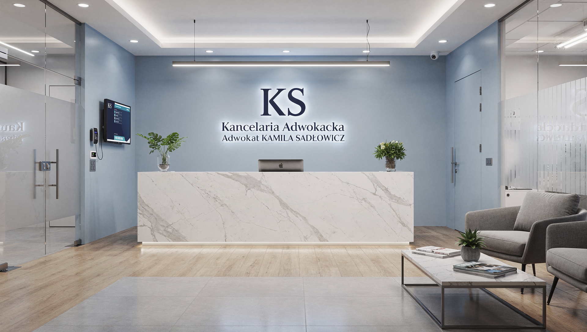

Kompleksowa obsługa prawna w kluczowych dziedzinach prawa. Doświadczenie, profesjonalizm i skuteczność w każdej sprawie.
Specjalizuję się w ośmiu kluczowych obszarach prawa, oferując kompleksową obsługę zarówno dla przedsiębiorców, jak i klientów indywidualnych. Wieloletnie doświadczenie, rzetelność i indywidualne podejście do każdej sprawy gwarantują skuteczne rozwiązanie Twoich problemów prawnych.
Prawo gospodarcze to kompleksowa obsługa prawna przedsiębiorców na każdym etapie prowadzenia działalności – od rejestracji spółki, przez bieżące doradztwo, aż po reprezentację w sporach korporacyjnych.
Jako adwokat specjalizujący się w prawie gospodarczym oferuję pełne wsparcie dla spółek, zarządów i przedsiębiorców indywidualnych. Moje wieloletnie doświadczenie w obsłudze podmiotów gospodarczych pozwala mi skutecznie doradzać w najtrudniejszych sprawach biznesowych.
Kompleksowo doradzam w kwestiach związanych z funkcjonowaniem spółek handlowych zgodnie z Kodeksem spółek handlowych (KSH), reprezentuję Zarządy przed organami nadzorczymi oraz wspieram w procesach restrukturyzacyjnych i przekształceniach organizacyjnych.
Współpracuję zarówno z małymi firmami rodzinnymi, jak i dużymi korporacjami, dostosowując strategię prawną do specyfiki branży i potrzeb biznesowych klienta.

Restrukturyzacja to szansa dla firm w kryzysie finansowym na odbudowę płynności i kontynuację działalności. Skutecznie reprezentuję zarówno dłużników, jak i wierzycieli w postępowaniach restrukturyzacyjnych i upadłościowych.
Oferuję kompleksową obsługę w sprawach restrukturyzacyjnych – od analizy sytuacji finansowej przedsiębiorstwa, przez przygotowanie wniosku o otwarcie postępowania, aż po negocjacje z wierzycielami i reprezentację na zgromadzeniach wierzycieli.
Moje doświadczenie obejmuje zarówno postępowania sanacyjne (ratowanie firmy), jak i upadłościowe (likwidacja). Dzięki dogłębnej znajomości przepisów Prawa restrukturyzacyjnego oraz praktyce w prowadzeniu ok. 200 spraw rocznie, skutecznie wspieram klientów w najtrudniejszych momentach finansowych.
Doradzam również wierzycielom w zakresie dochodzenia roszczeń w postępowaniach restrukturyzacyjnych i upadłościowych, maksymalizując szanse na odzyskanie należności.
Prawo pracy to złożona dziedzina regulująca relacje pracownik-pracodawca. Reprezentuję zarówno pracowników dochodzących swoich praw, jak i pracodawców potrzebujących wsparcia w sporach pracowniczych i tworzeniu regulaminów wewnętrznych.
Skutecznie bronię interesów pracowników w sprawach o przywrócenie do pracy, odszkodowania za niezgodne z prawem rozwiązanie umowy, niewypłacone wynagrodzenia, mobbing oraz dyskryminację w miejscu pracy.
Dla pracodawców oferuję kompleksowe doradztwo w zakresie tworzenia regulaminów pracy i wynagrodzeń, weryfikacji umów o pracę, przygotowania dokumentacji zwolnień (w tym zwolnień grupowych), reprezentacji przed sądami pracy oraz Państwową Inspekcją Pracy.
Dzięki mojemu interdyscyplinarnemu wykształceniu (Prawo + Socjologia) rozumiem nie tylko aspekty prawne, ale także emocjonalne i społeczne konflikty w miejscu pracy, co pozwala mi skutecznie mediować i znajdować rozwiązania polubowne.
Windykacja należności to moja specjalizacja, w której osiągam około 80% skuteczności. Skutecznie odzyskuję należności dla przedsiębiorców, małych firm oraz osób prywatnych – zarówno drogą polubowną, jak i sądową.
Prowadzę kompleksowe procesy windykacyjne – od wezwań do zapłaty, przez postępowanie upominawcze i procesy sądowe, aż po egzekucję komorniczą. Dzięki biegłości w systemach sądowych oraz efektywnemu zarządzaniu referatem ok. 200 spraw rocznie, zapewniam szybkie i skuteczne odzyskiwanie należności.
Oferuję elastyczne modele rozliczeń – zarówno stawkę stałą, jak i success fee (wynagrodzenie uzależnione od skuteczności windykacji), co pozwala dopasować współpracę do możliwości finansowych klienta.
Specjalizuję się w windykacji należności B2B (między przedsiębiorcami), należności konsumenckich oraz należności z tytułu umów cywilnoprawnych. Prowadzę również sprawy o zapłatę w postępowaniach gospodarczych przed sądami okręgowymi.
Prawo cywilne i rodzinne to obszar, w którym łączę wiedzę prawniczą z empatią i zrozumieniem dla trudnych sytuacji życiowych klientów. Reprezentuję w sprawach rozwodowych, alimentacyjnych, spadkowych oraz odszkodowawczych.
Sprawy rodzinne to często najtrudniejsze emocjonalnie momenty w życiu – rozwody, separacje, walka o kontakty z dziećmi, alimenty. Moje interdyscyplinarne wykształcenie (Prawo + Socjologia) pozwala mi nie tylko skutecznie bronić Twoich interesów, ale również wspierać Cię emocjonalnie w tym trudnym czasie.
W sprawach cywilnych reprezentuję klientów w procesach odszkodowawczych (wypadki komunikacyjne, błędy medyczne, szkody na osobie), sprawach spadkowych (stwierdzenie nabycia spadku, działów spadku, testamenty), oraz w sprawach dotyczących nieruchomości (roszczenia windykacyjne, zniesienie współwłasności).
Zawsze staram się w pierwszej kolejności wypracować rozwiązania polubowne (ugody, mediacje), które oszczędzają czas, pieniądze i emocje. Jeśli jednak sprawa wymaga procesu sądowego – reprezentuję z pełnym zaangażowaniem.
Prawo własności intelektualnej to dynamicznie rozwijająca się dziedzina, szczególnie w kontekście nowych technologii i sztucznej inteligencji. Oferuję kompleksowe doradztwo w zakresie ochrony praw autorskich, znaków towarowych oraz wykorzystania AI w biznesie.
W erze cyfryzacji i sztucznej inteligencji ochrona własności intelektualnej staje się kluczowa dla każdego przedsiębiorcy, twórcy czy startupu technologicznego. Doradzam w zakresie rejestracji znaków towarowych, patentów, ochrony praw autorskich do utworów (teksty, grafiki, muzyka, kod źródłowy), oraz w sprawach naruszeń IP.
Specjalizuję się również w nowej, rozwijającej się dziedzinie – prawnych aspektach wykorzystania sztucznej inteligencji. Doradzam, jak legalnie wykorzystywać narzędzia AI w biznesie (ChatGPT, Midjourney, generatory treści), jakie są prawa autorskie do treści generowanych przez AI, oraz jak chronić własne utwory przed nieuprawnionym wykorzystaniem przez AI.
Reprezentuję również w sporach o naruszenie praw autorskich, znaków towarowych oraz w sprawach dotyczących umów licencyjnych i cesji praw autorskich.
Prawo ubezpieczeniowe to obszar, w którym reprezentuję osoby poszkodowane w dochodzeniu roszczeń z ubezpieczeń komunikacyjnych (OC, AC), ubezpieczeń majątkowych, życiowych oraz zdrowotnych.
Towarzystwa ubezpieczeniowe często odmawiają wypłaty odszkodowań lub oferują zaniżone kwoty, licząc na brak wiedzy prawnej poszkodowanych. Skutecznie reprezentuję klientów w sporach z ubezpieczycielami – zarówno w postępowaniach przedsądowych (negocjacje, wezwania do zapłaty), jak i w procesach sądowych.
Specjalizuję się w sprawach o odszkodowania z ubezpieczeń OC/AC po wypadkach komunikacyjnych, zadośćuczynienia za uszczerbek na zdrowiu, odszkodowań za szkody w nieruchomościach (zalania, pożary), oraz w sprawach dotyczących umów ubezpieczenia na życie.
Dla przedsiębiorców oferuję również doradztwo przy zawieraniu umów ubezpieczenia (weryfikacja warunków, negocjacje składek), reprezentację w sprawach o wypłatę odszkodowań z ubezpieczeń biznesowych oraz w sporach dotyczących ubezpieczeń odpowiedzialności cywilnej (OC zawodowe, OC członków zarządu).
Compliance i audyt prawny to kluczowe obszary zarządzania ryzykiem prawnym w przedsiębiorstwach. Oferuję kompleksowe doradztwo w zakresie zgodności z przepisami prawa, tworzenia regulaminów wewnętrznych oraz audytu prawnego spółek.
W dzisiejszym dynamicznie zmieniającym się otoczeniu prawnym (RODO, prawo pracy, prawo gospodarcze, prawo konkurencji) przedsiębiorcy muszą na bieżąco dbać o zgodność swojej działalności z przepisami. Przeprowadzam kompleksowe audyty prawne, identyfikując obszary ryzyka i proponując konkretne rozwiązania.
Specjalizuję się w tworzeniu regulaminów pracy, regulaminów wynagrodzeń, polityk RODO, procedur antykorupcyjnych, kodeksów etyki oraz innych dokumentów wewnętrznych dostosowanych do specyfiki branży i wielkości przedsiębiorstwa.
Doradzam również w zakresie wdrażania systemów compliance (zapobieganie nieprawidłowościom, ochrona sygnalistów, procedury wewnętrzne), przeprowadzam szkolenia dla pracowników oraz wspieram w kontaktach z organami nadzorczymi (Inspekcja Pracy, UODO, UOKiK).
Każda sprawa jest inna i wymaga indywidualnego podejścia. Skontaktuj się – pomogę Ci znaleźć najlepsze rozwiązanie.